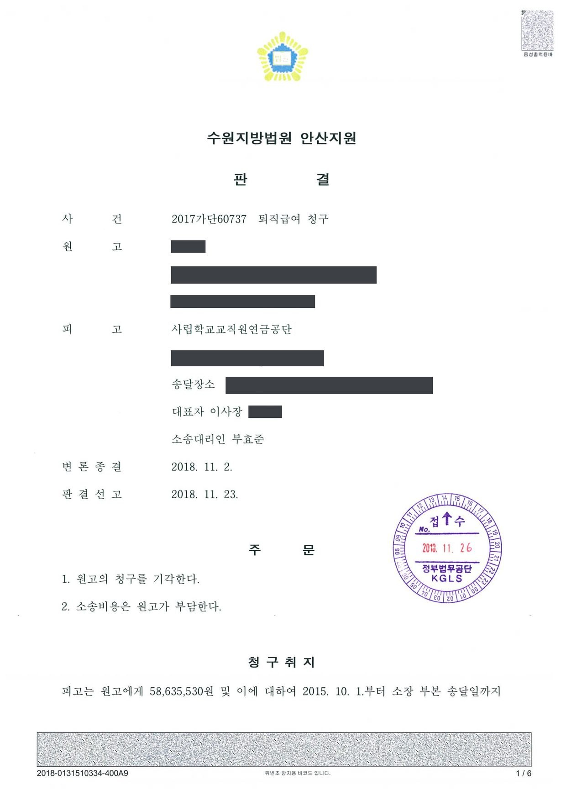

형 확정에 따른 퇴직급여 감액 관련 퇴직급여 청구소송
수원지방법원 안산지원 2017가단60737 · 담당변호사 부효준
판결문

사건의 요지
금고 이상의 형이 확정되어 당연퇴직한 사립학교 교원이 감액되지 않은 퇴직급여의 지급을 구한 사건으로, 「사립학교교직원 연금법」이 준용하는 급여 제한 규정의 적용 요건과 그 위헌 여부가 다투어졌습니다.
사건의 주요 내용
사립대학 교원이던 원고는 직무와 관련이 없는 사적인 분쟁 과정에서 범한 범죄(감금)로 2012년 징역 6월에 집행유예 1년의 형이 확정되어 사립학교법 제57조에 따라 당연퇴직하였습니다. 연금 관리 공단(피고 공단)은 사립학교교직원 연금법 제42조 제1항이 준용하는 공무원연금법 제64조 제1항에 따라, 원고가 받을 수 있었던 퇴직급여와 퇴직수당의 절반인 약 5,864만 원만을 지급하였습니다.
원고는 자신의 범죄가 직무와 관련이 없는 것인데도 급여를 감액하도록 한 법률 조항은 위헌으로 무효라고 주장하면서, 감액되어 지급받지 못한 약 5,864만 원과 지연손해금의 지급을 구하는 소를 제기하였습니다. 부효준 변호사는 피고 공단을 대리하였습니다.
쟁점
- 직무와 관련이 없는 범죄로 금고 이상의 형이 확정된 사립학교 교원에게도 퇴직급여를 감액하도록 한 조항이 비례원칙에 어긋나 재산권과 행복추구권을 침해하는지
- 국민연금 가입자나 일반 근로자와 달리 교원의 범죄를 퇴직급여 감액 사유로 삼은 것이 평등원칙에 위반되는지
원고의 주장
- 직무와 관련이 없는 행위로 금고 이상의 형이 확정된 경우에도 퇴직급여의 일부를 감액하도록 한 사립학교교직원 연금법 제42조 제1항, 공무원연금법 제64조 제1항 제1호는 헌법 제10조(인간의 존엄과 가치·행복추구권), 제11조(평등권), 제23조(재산권)에 위반되어 무효이다.
- 따라서 피고 공단은 위 조항을 적용하여 감액하고 지급하지 않은 퇴직급여를 지급할 의무가 있다.
피고 공단이 든 합헌 사유
- 교원은 학생을 직접 대면하여 사회 구성원으로 육성하는 역할을 맡고 있어 범죄로 형사처벌을 받으면 교원 전체에 대한 신뢰가 손상되므로, 재직 중의 사유로 금고 이상의 형을 받은 경우 퇴직급여를 감액하는 것은 교원의 범죄를 예방하고 성실한 근무를 유도하기 위한 정당한 입법목적을 가진다는 점
- 법률은 직무와 관련이 없는 과실범과 소속 상관의 정당한 직무상 명령에 따르다가 과실로 범한 경우를 감액 사유에서 제외하고, 본인이 낸 부담금과 그 이자 부분은 감액하지 못하도록 하여 침해를 최소화하고 있다는 점
- 교원연금제도는 성실한 복무에 대한 보상이라는 성격을 함께 가지므로, 국민연금 가입자나 근로기준법상 근로자와 달리 교원의 의무 위반 여부를 급여 감액 기준으로 삼은 것에는 합리적 근거가 있다는 점
법원의 판단
법원은 ① 교원의 업무는 사회 전체에 미치는 영향이 일반 공무원보다 크고 교원이 형사처벌을 받으면 교원 전체에 대한 신뢰가 실추되므로 급여 감액은 입법목적이 정당하고 그 달성에 상당한 수단이라는 점, ② 금고 이상의 형을 받은 모든 경우가 아니라 직무와 관련 없는 과실범 등을 제외하는 단서를 두고 본인 부담금과 이자 부분은 감액하지 못하게 하여 최소침해성에 부합한다는 점을 들었습니다.
또한 ③ 달성하려는 공익(교원에 대한 국민의 신뢰 유지)의 중요성에 비하여 침해되는 사익은 최소화되어 법익의 균형성에 어긋나지 않고, ④ 교원연금제도의 부수적 성격을 고려하면 국민연금 가입자나 근로자와 달리 취급하는 데 합리적 근거가 있어 자의적 차별이 아니라고 보았습니다.
이에 따라 공무원연금법 제64조 제1항 제1호를 준용하는 사립학교교직원 연금법 제42조 제1항이 헌법에 위반된다고 볼 수 없다고 판단하고, 이와 다른 전제에 선 원고의 청구를 받아들이지 않았습니다.
살피건대, ① 교원의 업무는 학생들을 직접 대면하여 건전한 사회 구성원으로 육성하는 역할을 담당하는 것이라는 점에서 사회 전체에 미치는 영향이 일반적인 공무원의 업무에 비해 크고, 교원이 범죄행위로 인하여 형사처벌을 받은 경우에는 당해 교원에 대한 국민의 신뢰가 손상되어 원활한 직무수행에 어려움이 생기고 이는 곧바로 교원 전체에 대한 신뢰를 실추시켜 공공의 이익을 해하는 결과를 초래하게 되는바, 재직 중의 사유로 금고 이상의 형을 선고받은 경우에 퇴직급여 등을 감액하는 것은 교원의 범죄를 예방하고 재직 중 성실히 근무하도록 유도하는 효과를 고려한 것으로 그 입법목적이 정당하고 그 목적 달성에 상당한 수단인 점, (중략) 등을 종합하여 보면, 공무원연금법 제64조 제1항 제1호를 준용하고 있는 사립학교교직원 연금법 제42조 제1항이 헌법에 위반된다고 볼 수 없다. 따라서 이와 다른 전제에 선 원고의 청구는 받아들이기 어렵다.
수원지방법원 안산지원 2017가단60737 판결 이유 '2. 다. 판단' 부분(②~④ 사유는 중략)
※ 판결 이유 가운데 이 사건의 판단 기준이 된 부분을 그대로 옮긴 것으로, 당사자 이름 등은 가렸습니다.
이 사건이 보여 주는 것
공무원이나 사립학교 교직원이 재직 중의 사유로 금고 이상의 형을 받으면 퇴직급여와 퇴직수당의 일부가 감액되며, 그 범죄가 직무와 관련이 없는 것이라도 과실범이 아닌 한 감액 대상이 됩니다. 이 판결은 이러한 감액 조항이 헌법에 위반되지 않는다고 본 것으로, 급여를 감액받은 교직원이 조항 자체의 위헌성을 다투는 방법으로 구제받기는 어렵다는 점을 보여 줍니다.
다만 감액 사유에 해당하는지는 형의 종류(금고 이상인지), 범죄가 재직 중의 사유인지, 과실범으로서 단서의 제외 사유에 해당하는지에 따라 달라지므로, 실제 다툼은 이러한 요건의 충족 여부를 중심으로 이루어지는 것이 보통입니다.
비슷한 처분을 받으셨다면
행정처분은 처분이 있음을 안 날부터 90일 이내에 행정심판이나 취소소송으로 다투어야 하고, 기간이 지나면 돌이킬 수 없는 처분은 집행정지를 서둘러야 합니다. 처분서를 받은 날짜부터 확인해 드립니다.